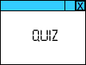

(Sollten Sie gerade von einer anderen Seite hierher zurückgekommen sein oder diese Seite neu geladen haben, kann es sein, dass Sie erneut auf jede Ihrer ausgewählten Antworten klicken müssen, damit das Bewertungsprogramm korrekt arbeitet.)
(Sollten Sie gerade von einer anderen Seite hierher zurückgekommen sein oder diese Seite neu geladen haben, kann es sein, dass Sie erneut auf jede Ihrer ausgewählten Antworten klicken müssen, damit das Bewertungsprogramm korrekt arbeitet.)
überarbeitet 05.10.03; übersetzt 03.03.11; Deutsche Übersetzung Heinrich Gailer
 Das ist ein Übungsquiz. Die Ergebnisse werden nirgendwo erfasst und haben keine Auswirkung auf Ihre Note. Die Fragen in diesem Quiz dürfen in keinem Quiz oder Test erscheinen, der für Ihre Benotung zählt.
Hinweise: Wählen Sie für jede Frage die beste Antwort und klicken Sie dann auf das entsprechende Optionskästchen. Sie können Ihre Antwort jederzeit ändern. Wenn das Quiz bewertet wird, erscheint die richtige Antwort in der Textbox nach jeder Frage.
(Sollten Sie gerade von einer anderen Seite hierher zurückgekommen sein oder diese Seite neu geladen haben, kann es sein, dass Sie erneut auf jede Ihrer ausgewählten Antworten klicken müssen, damit das Bewertungsprogramm korrekt arbeitet.)
Um die alten Antworten zu löschen, halten Sie die Strg-Taste gedrückt und laden dann die Seite neu (Firefox). Bei anderen Browsern funktioniert das in Verbindung mit der Umschalt- bzw. Strg+Umschalt-Taste. Beim Internet Explorer 8 muss die Seite verlassen und erneut aufgerufen werden.